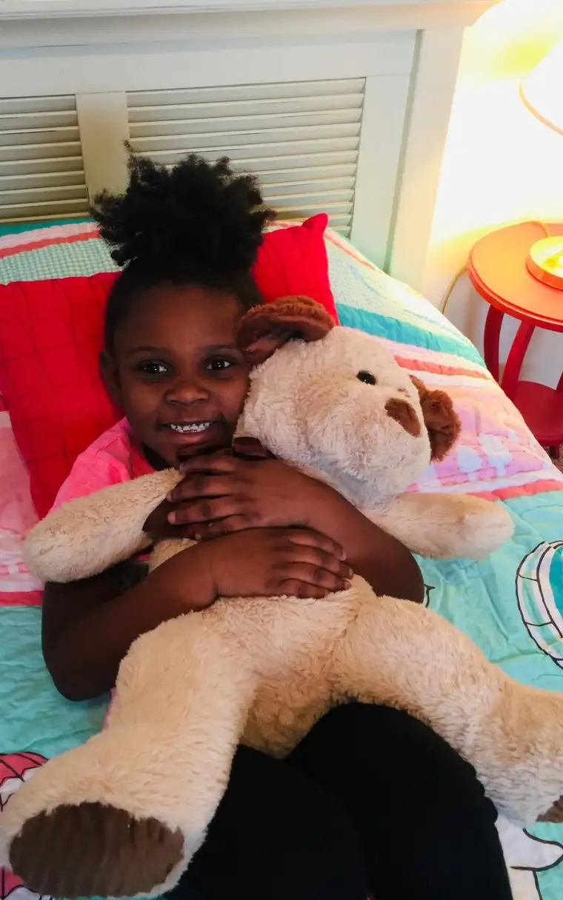

FARGO — It was the children who moved Jenessa Fillipi’s heart — especially those she’d met in her work as a school counselor who’d been sleeping on and eating off the floors of their homes.
Her mother, Char Kuznia, quickly became privy to the soul-stirrings of her daughter, and recounts the beginnings of the resulting nonprofit, Down Home, which serves families transitioning out of homelessness.
Kuznia says Fillipi’s move from parochial to public school first alerted her.
“It was an awakening,” Kuznia says. “Children were coming to her with totally different types of problems, situations and issues than anything she’d encountered before.”
Some came to school sleepy, straight from the homeless shelter. “Or maybe they got into a home, but it just had four walls and a door,” she says. “It didn’t have a bed, a sofa to cuddle up on or a table to eat dinner at,” adding, “It can be hard to bring friends home to your space when you don’t even have a bed.”
Fillipi’s husband, Jake, a handyman who also manages apartments, was noticing the same trend — people living in apartment units without furniture or decorations. Their shared observations set into motion a long-held dream of starting a nonprofit; ultimately, they found a gap in what other nonprofits offered.
With the help of referring agencies, they provide furniture and other homey items for abodes of those transitioning from homelessness to permanent housing.

“It’s easy to get discouraged, and even sometimes fall back into homelessness” without having a furnished home, Kuznia says. “Our prayer is to fill that niche so they can hopefully move on with dignity by giving them beds to sleep on, wall decor, sometimes even paper towels and toilet paper.”
Growing work
Down Home was officially set in motion as a nonprofit in the fall of 2017. Just a couple days before Christmas, the crew accomplished its first move-in, or “reveal.” So far, Down Home has served 44 families, impacting 140 clients.
“But outside of that there have been hundreds of volunteers — over 10,000 volunteer hours and counting,” Fillipi says.
Though much is planned beforehand, with the family’s input, the actual move-in event happens in a matter of several hours. They’ve learned much in the process, going from storing items in their own basements and garages to finding outside office and warehouse space; from using their own vehicles for hauling items to renting U-hauls; from relying on family members to gratefully accepting community help.
“It was more of a divine calling,” Kuznia says of its beginning. “Jenessa would say that, too; that she could just feel it.”

Fillipi was reading “Magnolia Story” by Chip and Joanna Gaines when the vision began appearing. “By the end of the story, I was feeling a divine pull,” she says. “I turned to Jake and said, ‘The Lord is calling us to something.’”
Though initially he was blindsided by her revelation, she says, Jake prayed about it with her, and by the time of the launch, was fully on board, as were their four children. It meant some immediate sacrifices, however.
“Because it was an investment of finances, time and energy, we had to tell them, ‘This means we’re not going on a family trip this year,’” Fillipi explains. “But at the end of the day, we knew we couldn’t say no to this opportunity to impact our community in such a strong way.”
Kuznia, the only full-time staffer and “face of Down Home,” according to Fillipi, says the reactions of those whose homes they fill and brighten provides their reward.
“By just seeing the eyes and faces of the people we serve and getting to know them… I can see (God) in everyone I’ve come into contact with,” she says.
Her involvement adds another providential aspect to Down Home. Around the time of her daughter’s epiphany, diagnoses of a rare blood cancer and spinal disease forced Kuznia to leave her 41-year career in the banking industry in Stephen, Minn. The nonprofit, she says, has given her a new, life-giving purpose.
Family effort
Despite the outpouring of outside generosity, the heartbeat of Down Home remains rooted in one family’s desire to help other families thrive. Along with her son, Tyson, who assists with communications, Kuznia calls Jake the “rock” who provides for the bulk of the manual-labor aspects.
“Jake is the most humble and hardworking man that I know,” Fillipi adds. “He’ll work behind the scenes and do what needs to get done at all times. He has been the quiet backbone of it all.”
Jake admits his favorite part is move-in day, hauling items that have already been carefully sorted and chosen, working toward “the reveal.”
“Everyone gets pretty teary-eyed,” he says. “It’s neat to see what so many people together can do. It’s like we’re helping them feel like a person.”

Encircling the whole family, he says, brings hope to the younger generations.
“We’re helping (the kids) see what it’s like to have a home, a place to eat, a place to gather,” he says. “Maybe if they see what it’s like, they’ll want do something different.”
Each act of generosity for Down Home, he says, ends up circling back.
“Every time someone donates something, there’s a story behind it,” he says.
The name itself, Down Home, transports Fillipi back to her rural, community-focused roots, which will be evident at the second-annual fundraising Hoedown event the organization will hold this weekend.
She says the nonprofit’s name was inspired by a song by county-music artists Alabama, but it was another of their songs, “Born Country,” that ultimately helped her see how “the Lord was weaving this story together” long ago, through the words, “I’ve got a hundred years of down home running through my blood.”
“I had heard that song many times growing up, but suddenly, it had a whole new meaning,” she says. “It was as if the Lord said, “Down Home has been a long time coming. Down Home is an answer to the prayers of those who came before you and sacrificed before you, and here you are with this opportunity to impact those who need someone to step into that gap.’”
“Without the Lord, none of this would be possible,” Fillipi adds. “This is only the beginning of what he has in his grander vision, and where there’s greater vision, he’ll provide what is necessary.”
Info: Visit https://www.down-home.org.
[For the sake of having a repository for my newspaper columns and articles, I reprint them here, with permission, a week after their run date. The preceding ran in The Forum newspaper on Sept. 13, 2019.]